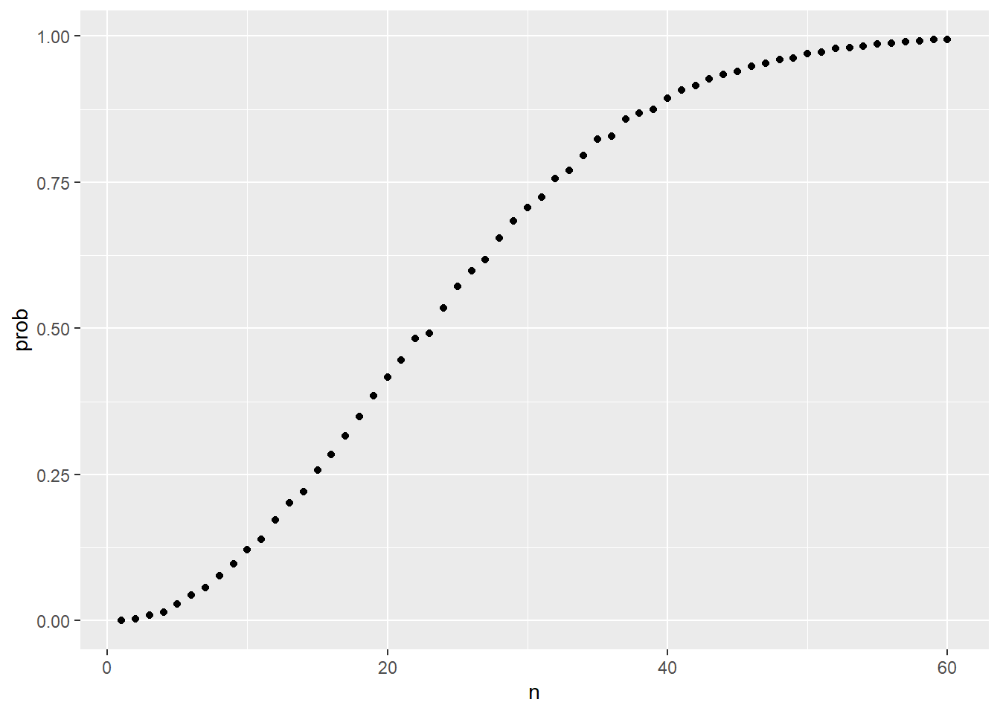
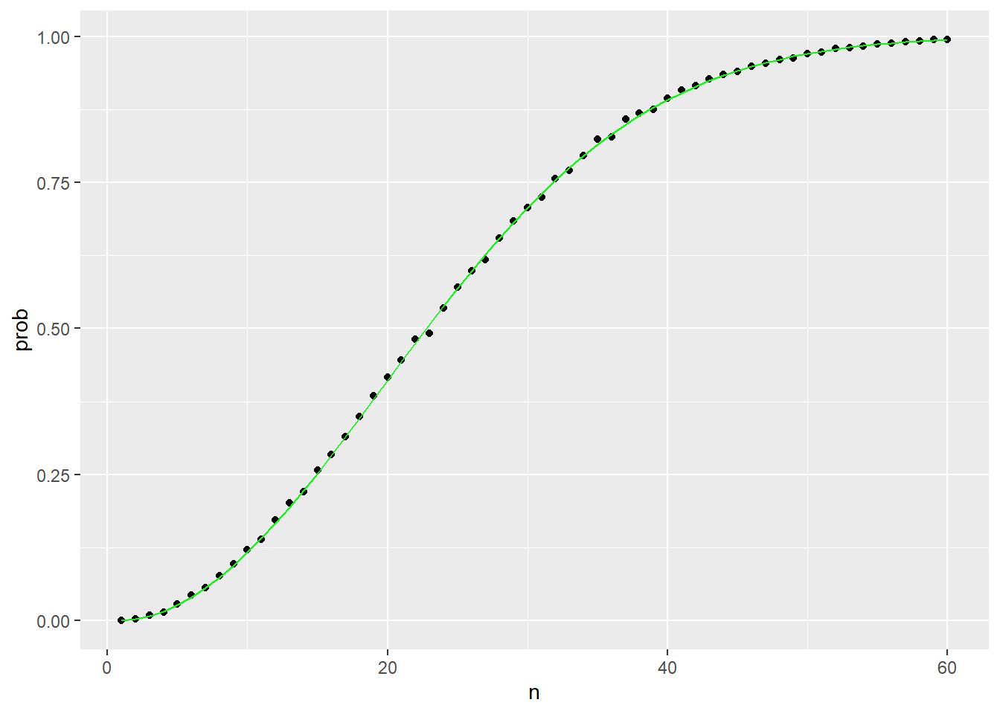

Code
beads <- rep(c("red", "blue"), times = c(2,3))
beads[1] "red" "red" "blue" "blue" "blue"Code
sample(beads, 1)[1] "blue"Aadyant Khatri
November 15, 2023
In games involving chance, the concept of probability is easily understood. For instance, it’s intuitive to grasp that the odds of rolling a seven with a pair of dice are 1 in 6. However, beyond gaming, the meaning of probability varies in different contexts. Today, probability theory has a much broader application, becoming a common term in everyday language. Google’s auto-complete suggestions for “What are the chances of” include queries about having twins, rain, lightning strikes, and cancer.
Understanding how to calculate probabilities provides an advantage in games of chance, leading many brilliant minds throughout history, including renowned mathematicians like Cardano, Fermat, and Pascal, to dedicate time and effort to unraveling the mathematics behind these games. This exploration gave birth to Probability Theory. Presently, probability remains incredibly relevant in contemporary games of chance, such as poker, where computing the probability of winning a hand based on visible cards is crucial. Casinos also heavily rely on probability theory to create games that almost certainly secure profits.
However, probability theory extends far beyond gaming and is highly valuable in various contexts, especially those reliant on data influenced by chance in some manner.
When we have information about the occurrence rates of various categories, establishing a distribution for categorical outcomes becomes fairly simple. We merely allocate a probability to each category. For situations resembling objects in a container (like beads in an urn), the distribution is determined by the proportion of each type of object.
For instance, if we’re randomly contacting potential voters from a population consisting of 44% Democrats, 44% Republicans, 10% undecided, and 2% Green Party members, these percentages serve as the probabilities for each group. Hence, the probability distribution is as follows:
| Pr(picking a Democrat) | 0.44 |
| Pr(picking a Republican) | 0.44 |
| Pr(picking an undecided) | 0.10 |
| Pr(picking a Green) | 0.02 |
Computers offer the capability to carry out the described simple random experiment: for instance, selecting a bead randomly from a bag holding three blue beads and two red ones. Random number generators allow us to simulate this random selection process.
An illustration of this is the sample function in R. To showcase its application, we display its use in the code provided below. Initially, we utilize the function “rep” to create the collection of beads, resembling an urn, and subsequently employ “sample” to randomly select a bead from this simulated urn.
[1] "red" "red" "blue" "blue" "blue"[1] "blue"This code generates a single random outcome. To simulate an infinite repetition of this experiment, which is practically impossible, we opt to repeat it a sufficiently large number of times, approximating an infinite scenario. This approach is an illustration of a Monte Carlo simulation.
We utilize the replicate function, enabling us to iterate the same action any desired number of times. In this instance, we repeat the random event X = 10,000 times. Subsequently, we verify if our defined definition aligns with the approximation derived from this Monte Carlo simulation. Here, prop.table gives us the proportions:
events
blue red
0.6004 0.3996 The figures presented represent the estimated probabilities from this Monte Carlo simulation. According to statistical theory, as the value of ‘X’ increases, the approximations tend to converge towards 3/5, equivalent to 0.6, and 2/5, equivalent to 0.4.
In probability, events A and B are independent if the occurrence of one doesn’t influence the probability of the other. Mathematically, this means that the probability of both events happening is the product of their individual probabilities. This concept simplifies calculations but doesn’t imply the events are unrelated in reality.
When you toss a fair coin and roll a fair six-sided die, these events are independent. The outcome of the coin toss (heads or tails) does not affect the outcome of rolling the die (getting a specific number). The probabilities of each event are not influenced by the other.
Drawing cards from a deck without replacing them creates dependent events. For instance, after drawing a card from a standard deck without replacing it, the probability of drawing a specific card on the next draw changes because the deck’s composition has altered.
When events are not independent, conditional probabilities are useful. We saw an example earlier where we talked about drawing two cards from a deck of cards without replacement. Consider:
Pr(Card 2 is a king ∣ Card 1 is a king ) = 3/51We use the | as shorthand for “given that”.
When two events, say are independent, we have:
Pr(A | B) = Pr(A)In mathematical terms, this means that the occurrence of event B has no bearing on the probability of event A happening.
The addition rule tells us that:
Pr(A or B) = Pr(A) + Pr(B) - Pr(A and B)This rule is easy to understand if you visualize a Venn diagram. When we add probabilities directly, we’re counting the overlapping part twice, thus necessitating the subtraction of one instance to correct for the duplication.
If we seek to determine the likelihood of two events, for instance, A and B, happening simultaneously, we can apply the multiplication rule:
Pr(A and B) = Pr(A) * Pr(B|A)Suppose you have a bag with 4 red balls and 6 blue balls. You draw one ball, note its color, and without replacing it, draw another ball. Let’s calculate the probability of drawing a red ball followed by drawing another red ball:
First Event: Probability of drawing a red ball = Number of red balls / Total number of balls = 4 / 10 = 2/5.
Second Event: If the first ball drawn was red (which has happened with a probability of 2/5), now there are 3 red balls left out of 9 total balls. Therefore, the probability of drawing a second red ball after the first red ball was drawn = 3 / 9 = 1/3.
Now, according to the multiplication rule, the overall probability of both events happening (drawing two red balls consecutively) is found by multiplying the probabilities of the individual events:
Probability of drawing two red balls = Probability of the first red ball * Probability of the second red ball given the first was red = (2/5) * (1/3) = 2/15.
So, the probability of drawing two red balls consecutively, considering the dependency, is 2/15.
Now let’s discuss one very prominent problems in probability theory: Birthday problem
Let’s consider a scenario in a classroom containing 50 individuals. If we assume these 50 people were selected randomly, what is the probability that at least two individuals share the same birthday? To determine this probability, we’ll employ a Monte Carlo simulation. For the sake of simplicity, we disregard individuals born on February 29, as this adjustment doesn’t significantly alter the outcome.
Initially, consider that birthdays can be depicted as values ranging from 1 to 365. Therefore, a collection of 50 birthdays can be acquired in the following manner. To verify whether there are at least two individuals with the same birthday within this specific group of 50 people, we can utilize the duplicated function. This function identifies duplicates within a vector and returns TRUE if any element is a duplicate.
[1] FALSE FALSE FALSE TRUE FALSE TRUE FALSETo check if two birthdays match, we can easily employ the any and duplicated functions in this manner:
To estimate the probability of having a common birthday within a group, we conduct multiple trials by selecting groups of 50 birthdays repeatedly.
[1] 0.9697We can quickly create a function to compute this for any group size. By utilizing the sapply function, we can execute operations on individual elements using any specified function. Now, we’re able to create a graph illustrating the estimated probabilities of two individuals sharing a birthday within a gathering of size n.
Warning: `qplot()` was deprecated in ggplot2 3.4.0.
Let’s calculate precise probabilities instead of relying on Monte Carlo estimations. By employing mathematical methods, we obtain accurate solutions, and the calculations are significantly quicker because we’re not required to conduct experiments to generate results.
First, considering the initial person, the likelihood of them having a distinct birthday is 1. Following this, the probability that the second person possesses a unique birthday, given that the first person has already selected one, is 364 out of 365. Subsequently, provided the first two individuals have distinct birthdays, the third person is left with 363 days to choose from. Continuing this pattern, the probability of all 50 people having different birthdays is then determined. Then the multiplication rule can be applied to find the probability of having a clash of birthdays.
The code can be written for n number of people:

This graph demonstrates that the Monte Carlo simulation offered a highly accurate estimation of the precise probability.
Random variables are numerical results arising from unpredictable procedures. Generating random variables can be straightforward using illustrations like those we’ve demonstrated. For instance, consider defining X as 1 when a bead is blue and 0 otherwise.
In this context, X represents a random variable where the outcome alters randomly each time we pick a new bead. See the example provided below:
[1] 1[1] 1[1] 0The probability distribution of a random variable describes the likelihood of different outcomes or values that the variable can take on, along with their associated probabilities. It provides a comprehensive overview of the probabilities associated with each possible value of the random variable. More specifically, the probability distribution of a random variable, say S, tells us the probability of the observed value falling at any given interval.
If we can define a cumulative distribution function \(F(a) = Pr(S \le a)\), then we will be able to answer any question related to the probability of events defined by our random variable S. We call this F the random variable’s distribution function.
We can approximate the distribution function of the random variable by employing a Monte Carlo simulation, generating numerous instances of the random variable.
It is common to use letter E like this: \[
E[X]
\] to denote the expected value of the random variable X.
A random variable fluctuates around its expected value, and with numerous iterations, the average of these iterations converges toward the expected value, becoming more precise with increased iterations.
Theoretical statistics offers methods to compute expected values in various scenarios. For instance, a valuable formula indicates that the expected value of a random variable based on a single draw is the average of the numbers within the container or set.
In general, if an urn has two possible outcomes, say a and b, with proportions p and (1-p) respectively, the average is: \[
E[X] = ap + b(1-p)
\]
The standard error (SE) provides insight into the extent of variability around the expected value. In statistical literature, it’s typical to represent the standard error of a random variable as \[ SE[X] \]
In general, if an urn has two possible outcomes, say a and b, with proportions p and (1-p) respectively, the average is: \[
SE[X] = |b-a|\sqrt{p(1-p)}
\] ## Central Limit Theorem
The Central Limit Theorem (CLT) states that when the number of draws, known as the sample size, is sufficiently large, the probability distribution of the sum of independent draws tends to be close to a normal distribution. As sampling models are utilized across numerous data generation procedures, the CLT is widely regarded as one of the most significant and influential mathematical concepts in history.
CLT operates effectively when the number of samples is considerable, but what qualifies as “large” is subjective. In various cases, as few as 30 samples might suffice for the CLT to be applicable, and in specific situations, even 10 samples could be adequate. It’s important to note that these are not universal guidelines. It’s worth considering that when the likelihood of success is extremely low, larger sample sizes become necessary.
As the sample size (n) increases, the standard error of the mean decreases. When n becomes sufficiently large, the standard error approaches zero, and the average of the samples tends to match the average of the entire population. This phenomenon is referred to in statistical literature as the law of large numbers or the law of averages.
The misconception surrounding the law of averages often leads to misinterpretations. For instance, if you flip a coin five times and observe heads each time, someone might mistakenly argue that the next toss is likely to result in tails because, on average, there should be a 50-50 split between heads and tails. Similarly, there’s a tendency to anticipate a red outcome on a roulette wheel after witnessing five consecutive black spins. However, these events are independent, so the chance of a coin landing heads remains 50%, regardless of the previous outcomes. This principle also applies to roulette. The law of averages is relevant only when the number of trials is significantly large, not in small samples. For instance, after a million coin tosses, you’re expected to see approximately 50% heads, irrespective of the initial five tosses.
Another funny misapplication of the law of averages occurs in sports when television sportscasters predict a player’s imminent success just because they’ve encountered a few failures in a row.
---
title: "Probability Theory and Random Variables"
author: "Aadyant Khatri"
date: "2023-11-15"
categories: [probability, code, analysis]
image: "image.jpg"
---
# Probability
In games involving chance, the concept of probability is easily understood. For instance, it's intuitive to grasp that the odds of rolling a seven with a pair of dice are 1 in 6. However, beyond gaming, the meaning of probability varies in different contexts. Today, probability theory has a much broader application, becoming a common term in everyday language. Google's auto-complete suggestions for "What are the chances of" include queries about having twins, rain, lightning strikes, and cancer.
Understanding how to calculate probabilities provides an advantage in games of chance, leading many brilliant minds throughout history, including renowned mathematicians like Cardano, Fermat, and Pascal, to dedicate time and effort to unraveling the mathematics behind these games. This exploration gave birth to Probability Theory. Presently, probability remains incredibly relevant in contemporary games of chance, such as poker, where computing the probability of winning a hand based on visible cards is crucial. Casinos also heavily rely on probability theory to create games that almost certainly secure profits.
However, probability theory extends far beyond gaming and is highly valuable in various contexts, especially those reliant on data influenced by chance in some manner.
## Probability distributions
When we have information about the occurrence rates of various categories, establishing a distribution for categorical outcomes becomes fairly simple. We merely allocate a probability to each category. For situations resembling objects in a container (like beads in an urn), the distribution is determined by the proportion of each type of object.
For instance, if we're randomly contacting potential voters from a population consisting of 44% Democrats, 44% Republicans, 10% undecided, and 2% Green Party members, these percentages serve as the probabilities for each group. Hence, the probability distribution is as follows:
| | |
|--------------------------|------|
| Pr(picking a Democrat) | 0.44 |
| Pr(picking a Republican) | 0.44 |
| Pr(picking an undecided) | 0.10 |
| Pr(picking a Green) | 0.02 |
## Monte Carlo simulations for categorical data
Computers offer the capability to carry out the described simple random experiment: for instance, selecting a bead randomly from a bag holding three blue beads and two red ones. Random number generators allow us to simulate this random selection process.
An illustration of this is the sample function in R. To showcase its application, we display its use in the code provided below. Initially, we utilize the function "rep" to create the collection of beads, resembling an urn, and subsequently employ "sample" to randomly select a bead from this simulated urn.
```{r}
beads <- rep(c("red", "blue"), times = c(2,3))
beads
sample(beads, 1)
```
This code generates a single random outcome. To simulate an infinite repetition of this experiment, which is practically impossible, we opt to repeat it a sufficiently large number of times, approximating an infinite scenario. **This approach is an illustration of a Monte Carlo simulation.**
We utilize the replicate function, enabling us to iterate the same action any desired number of times. In this instance, we repeat the random event X = 10,000 times. Subsequently, we verify if our defined definition aligns with the approximation derived from this Monte Carlo simulation. Here, `prop.table` gives us the proportions:
```{r}
X <- 10000
events <- replicate(X, sample(beads, 1))
tab <- table(events)
prop.table(tab)
```
The figures presented represent the estimated probabilities from this Monte Carlo simulation. According to statistical theory, as the value of 'X' increases, the approximations tend to converge towards 3/5, equivalent to 0.6, and 2/5, equivalent to 0.4.
## Independence
In probability, events A and B are independent if the occurrence of one doesn't influence the probability of the other. Mathematically, this means that the probability of both events happening is the product of their individual probabilities. This concept simplifies calculations but doesn't imply the events are unrelated in reality.
When you toss a fair coin and roll a fair six-sided die, these events are **independent**. The outcome of the coin toss (heads or tails) does not affect the outcome of rolling the die (getting a specific number). The probabilities of each event are not influenced by the other.
Drawing cards from a deck without replacing them creates **dependent** events. For instance, after drawing a card from a standard deck without replacing it, the probability of drawing a specific card on the next draw changes because the deck's composition has altered.
## Conditional probabilities
When events are not independent, conditional probabilities are useful. We saw an example earlier where we talked about drawing two cards from a deck of cards without replacement. Consider:
```
Pr(Card 2 is a king ∣ Card 1 is a king ) = 3/51
```
We use the `|` as shorthand for "given that".
When two events, say are independent, we have:
```
Pr(A | B) = Pr(A)
```
In mathematical terms, this means that the occurrence of event `B` has no bearing on the probability of event `A` happening.
## Arithmetic rules
### Addition rule
The addition rule tells us that:
```
Pr(A or B) = Pr(A) + Pr(B) - Pr(A and B)
```
This rule is easy to understand if you visualize a Venn diagram. When we add probabilities directly, we're counting the overlapping part twice, thus necessitating the subtraction of one instance to correct for the duplication.
### Multiplication rule
If we seek to determine the likelihood of two events, for instance, A and B, happening simultaneously, we can apply the multiplication rule:
```
Pr(A and B) = Pr(A) * Pr(B|A)
```
Suppose you have a bag with 4 red balls and 6 blue balls. You draw one ball, note its color, and without replacing it, draw another ball. Let's calculate the probability of drawing a red ball followed by drawing another red ball:
First Event: Probability of drawing a red ball = Number of red balls / Total number of balls = 4 / 10 = 2/5.
Second Event: If the first ball drawn was red (which has happened with a probability of 2/5), now there are 3 red balls left out of 9 total balls. Therefore, the probability of drawing a second red ball after the first red ball was drawn = 3 / 9 = 1/3.
Now, according to the multiplication rule, the overall probability of both events happening (drawing two red balls consecutively) is found by multiplying the probabilities of the individual events:
Probability of drawing two red balls = Probability of the first red ball \* Probability of the second red ball given the first was red = (2/5) \* (1/3) = 2/15.
So, the probability of drawing two red balls consecutively, considering the dependency, is 2/15.
## Example
Now let's discuss one very prominent problems in probability theory: **Birthday problem**
Let's consider a scenario in a classroom containing 50 individuals. If we assume these 50 people were selected randomly, what is the probability that at least two individuals share the same birthday? To determine this probability, we'll employ a Monte Carlo simulation. For the sake of simplicity, we disregard individuals born on February 29, as this adjustment doesn't significantly alter the outcome.
Initially, consider that birthdays can be depicted as values ranging from 1 to 365. Therefore, a collection of 50 birthdays can be acquired in the following manner. To verify whether there are at least two individuals with the same birthday within this specific group of 50 people, we can utilize the `duplicated` function. This function identifies duplicates within a vector and returns `TRUE` if any element is a duplicate.
```{r}
n <- 50
bdays <- sample(1:365, n, replace = TRUE)
duplicated(c(1,2,3,1,4,3,5))
```
To check if two birthdays match, we can easily employ the `any` and `duplicated` functions in this manner:
```{r}
any(duplicated(bdays))
```
To estimate the probability of having a common birthday within a group, we conduct multiple trials by selecting groups of 50 birthdays repeatedly.
```{r}
B <- 10000
same_birthday <- function(n){
bdays <- sample(1:365, n, replace=TRUE)
any(duplicated(bdays))
}
results <- replicate(B, same_birthday(50))
mean(results)
```
We can quickly create a function to compute this for any group size. By utilizing the `sapply` function, we can execute operations on individual elements using any specified function. Now, we're able to create a graph illustrating the estimated probabilities of two individuals sharing a birthday within a gathering of size `n`.
```{r}
#| include: false
library(tidyverse)
```
```{r}
compute_prob <- function(n, B=10000){
results <- replicate(B, same_birthday(n))
mean(results)
}
n <- seq(1,60)
prob <- sapply(n, compute_prob)
prob <- sapply(n, compute_prob)
qplot(n, prob)
```
Let's calculate precise probabilities instead of relying on Monte Carlo estimations. By employing mathematical methods, we obtain accurate solutions, and the calculations are significantly quicker because we're not required to conduct experiments to generate results.
First, considering the initial person, the likelihood of them having a distinct birthday is 1. Following this, the probability that the second person possesses a unique birthday, given that the first person has already selected one, is 364 out of 365. Subsequently, provided the first two individuals have distinct birthdays, the third person is left with 363 days to choose from. Continuing this pattern, the probability of all 50 people having different birthdays is then determined. Then the multiplication rule can be applied to find the probability of having a clash of birthdays.
The code can be written for `n` number of people:
```{r}
exact_prob <- function(n){
prob_unique <- seq(365,365-n+1)/365
1 - prod( prob_unique)
}
exact_probs <- sapply(n, exact_prob)
qplot(n, prob) + geom_line(aes(n, exact_probs), col = "green")
```
This graph demonstrates that the Monte Carlo simulation offered a highly accurate estimation of the precise probability.
# Random Variables
Random variables are numerical results arising from unpredictable procedures. Generating random variables can be straightforward using illustrations like those we've demonstrated. For instance, consider defining X as 1 when a bead is blue and 0 otherwise.
```{r}
beads <- rep( c("red", "blue"), times = c(2,3))
X <- ifelse(sample(beads, 1) == "blue", 1, 0)
```
In this context, X represents a random variable where the outcome alters randomly each time we pick a new bead. See the example provided below:
```{r}
ifelse(sample(beads, 1) == "blue", 1, 0)
ifelse(sample(beads, 1) == "blue", 1, 0)
ifelse(sample(beads, 1) == "blue", 1, 0)
```
## Probability distribution of a random variable
The probability distribution of a random variable describes the likelihood of different outcomes or values that the variable can take on, along with their associated probabilities. It provides a comprehensive overview of the probabilities associated with each possible value of the random variable. More specifically, the probability distribution of a random variable, say S, tells us the probability of the observed value falling at any given interval.
If we can define a cumulative distribution function $F(a) = Pr(S \le a)$, then we will be able to answer any question related to the probability of events defined by our random variable `S`. We call this `F` the random variable's distribution function.
We can approximate the distribution function of the random variable by employing a Monte Carlo simulation, generating numerous instances of the random variable.
## Expected value and standard error
It is common to use letter `E` like this: $$
E[X]
$$ to denote the expected value of the random variable `X`.
A random variable fluctuates around its expected value, and with numerous iterations, the average of these iterations converges toward the expected value, becoming more precise with increased iterations.
Theoretical statistics offers methods to compute expected values in various scenarios. For instance, a valuable formula indicates that the expected value of a random variable based on a single draw is the average of the numbers within the container or set.
In general, if an urn has two possible outcomes, say `a` and `b`, with proportions `p` and `(1-p)` respectively, the average is: $$
E[X] = ap + b(1-p)
$$
The **standard error** (SE) provides insight into the extent of variability around the expected value. In statistical literature, it's typical to represent the standard error of a random variable as $$
SE[X]
$$
In general, if an urn has two possible outcomes, say `a` and `b`, with proportions `p` and `(1-p)` respectively, the average is: $$
SE[X] = |b-a|\sqrt{p(1-p)}
$$ \## Central Limit Theorem
The Central Limit Theorem (CLT) states that when the number of draws, known as the sample size, is sufficiently large, the probability distribution of the sum of independent draws tends to be close to a normal distribution. As sampling models are utilized across numerous data generation procedures, the CLT is widely regarded as one of the most significant and influential mathematical concepts in history.
CLT operates effectively when the number of samples is considerable, but what qualifies as "large" is subjective. In various cases, as few as 30 samples might suffice for the CLT to be applicable, and in specific situations, even 10 samples could be adequate. It's important to note that these are not universal guidelines. It's worth considering that when the likelihood of success is extremely low, larger sample sizes become necessary.
## Law of large numbers
As the sample size (n) increases, the standard error of the mean decreases. When n becomes sufficiently large, the standard error approaches zero, and the average of the samples tends to match the average of the entire population. This phenomenon is referred to in statistical literature as the law of large numbers or the law of averages.
The misconception surrounding the law of averages often leads to misinterpretations. For instance, if you flip a coin five times and observe heads each time, someone might mistakenly argue that the next toss is likely to result in tails because, on average, there should be a 50-50 split between heads and tails. Similarly, there's a tendency to anticipate a red outcome on a roulette wheel after witnessing five consecutive black spins. However, these events are independent, so the chance of a coin landing heads remains 50%, regardless of the previous outcomes. This principle also applies to roulette. The law of averages is relevant only when the number of trials is significantly large, not in small samples. For instance, after a million coin tosses, you're expected to see approximately 50% heads, irrespective of the initial five tosses.
Another funny misapplication of the law of averages occurs in sports when television sportscasters predict a player's imminent success just because they've encountered a few failures in a row.